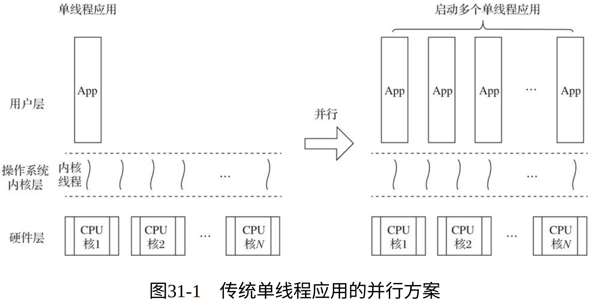
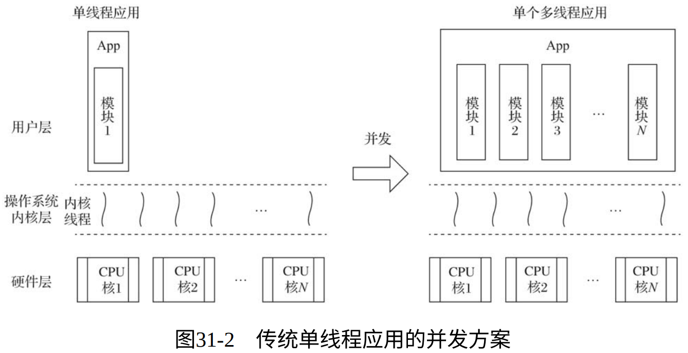
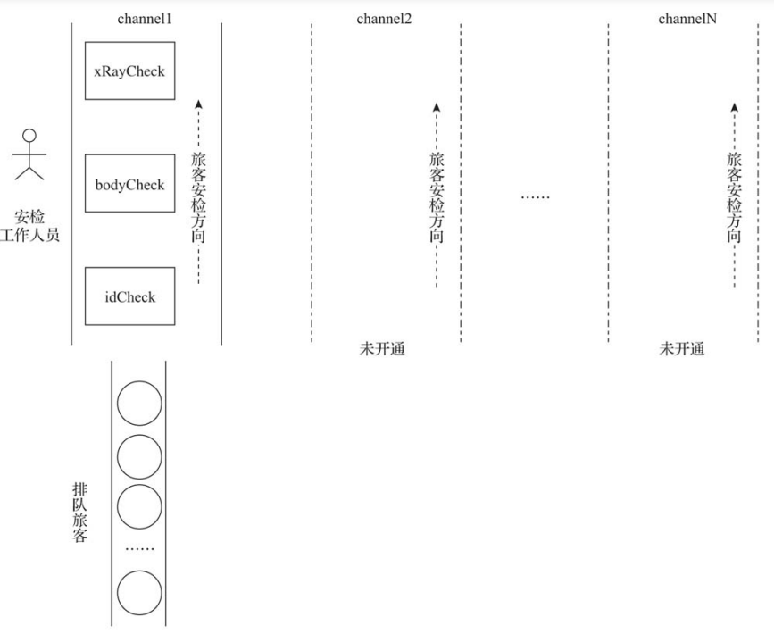
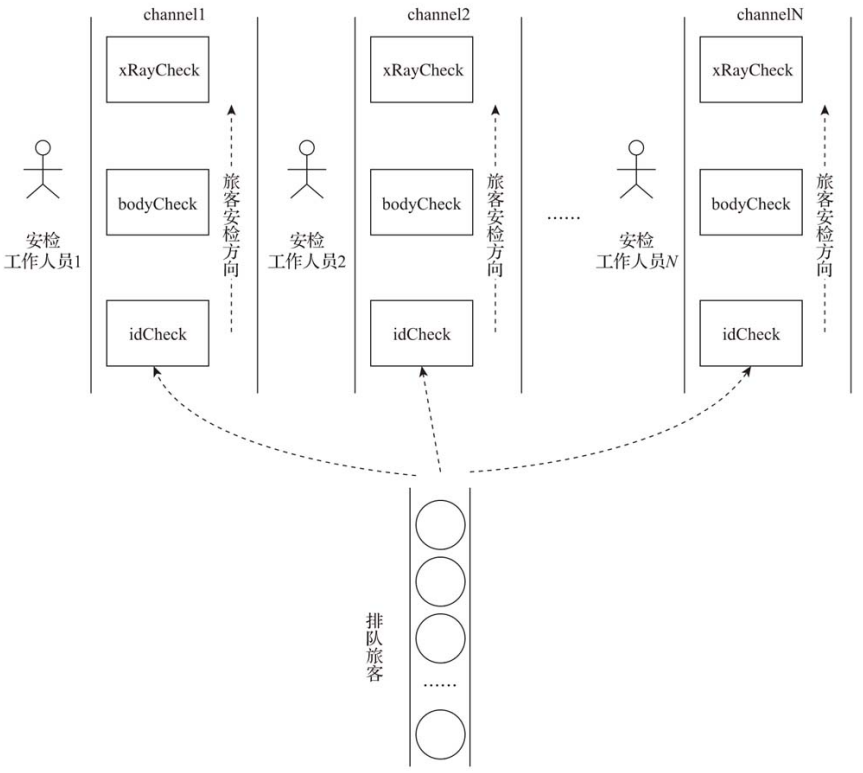
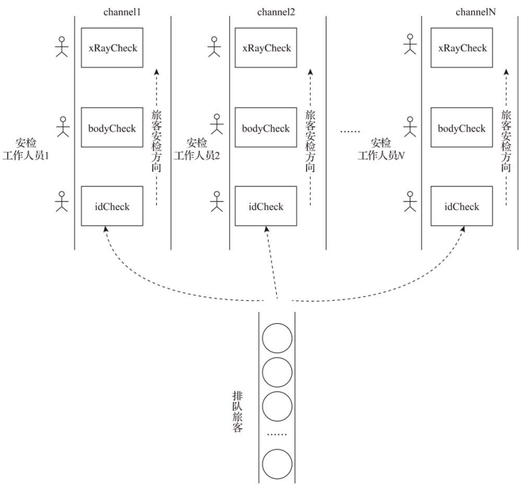

并发不是并行，并发关乎结构，并行关乎执行
——Rob Pike， Go语言之父
1. 并发与并行
1.1.1. 并行方案
并行方案 就是在处理器核数重组的情况下 启动多个单线程应用的实例 ，这样每个实例运行在一个核上，从而尽可能多地利用多和计算资源。
但这种方案是有约束的，对于那些不支持在同一环境下部署多实例或同一用户仅能部署一个实例的应用，用传统的部署方式使之并行运行是有难度的甚至是无法实现的。不过近些年兴起的轻量级容器技术可以在一定程度上促成此方案。

1.2. 并发方案
并发方案 就是重新做应用结构设计，将应用分解成多个在基本执行单元中执行的、可能有一定关联关系的代码片段（图中的模块1〜模块 N）：

Go语言的设计哲学之一是“原生并发，轻量高效”。Go并未使用操作系统线程作为承载分解后的代码片段（模块）的基本执行单元，而是实现了goroutine这一由Go运行时负责调度的用户层轻量级线程为并 发程序设计提供原生支持。其优势如下：
- 资源占用小，每个goroutine的初始栈大小仅为2KB。
- 由Go运行时而不是操作系统调度，goroutine上下文切换代价较小。
- 语言原生支持：goroutine由go关键字接函数或方法创建，函数或方法返回即表示goroutine退出，开发体验更佳。
- 语言内置channel作为goroutine间通信原语，为并发设计提供强大支撑。
因此，在应用的结构设计阶段，Go的惯例是优先考虑并发设计。这样做更多是考虑到随着外界环境的变化，经过并发设计的Go应用可以更好、更自然地适应规模化。
2. Go并发设计实例
下面是一个模拟机场安检的例子：
- 排队旅客（passenger）：代表应用的外部请求。
- 机场工作人员：代表计算资源。
- 安检程序：代表应用，必须在获取机场工作人员后才能工作。模拟安检例⼦中，安检程序内部流程包括 登机身份检查 （idCheck）、人身检查（bodyCheck）和X光机对随身物品的检查（xRayCheck）。
- 安检通道（channel）：每个通道对应一个应用程序的实例。
2.1. 顺序设计

2.2. 并行方案

2.3. 并发方案
